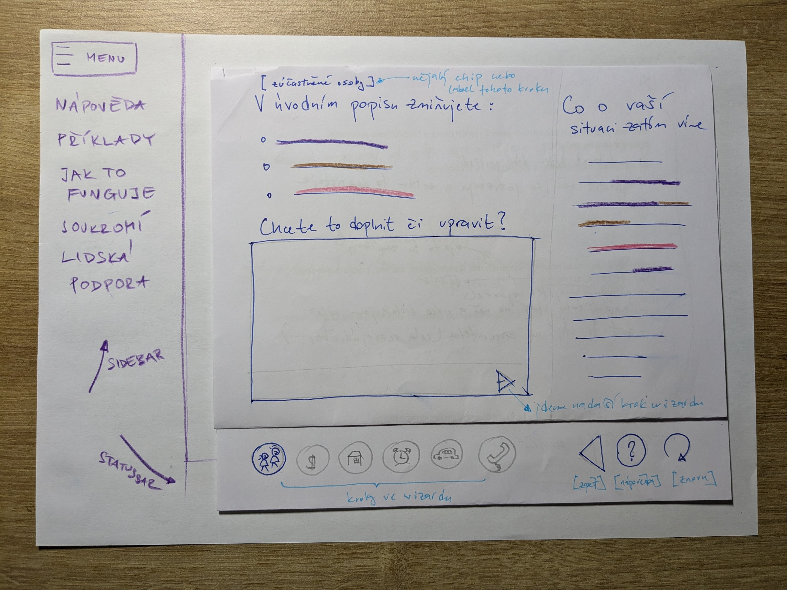
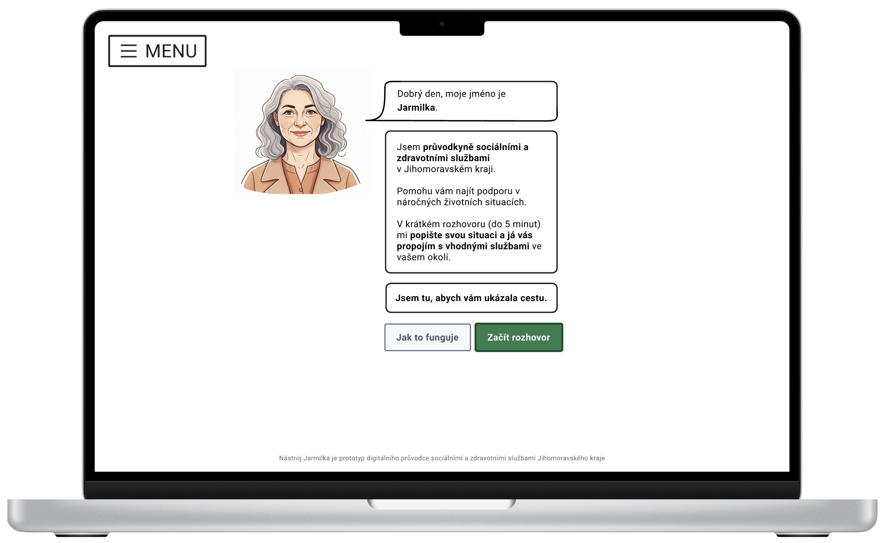

Service design workshop IV
Prototypování, design critique a vibe coding workshop
Erik Vaněk, 03.04.2025
359416@mail.muni.cz
Co dnes čekat?
- Pokračování prototypování do větší hloubky
- Design critique – strukturovaná zpětná vazba
- Pauza na ☕ (kolem 11:40)
- Vibe coding workshop – AI asistované prototypování
- Sdílení výstupů a postřehů
- Zadání pro další práci
Prototypování – pokračování
Kde jsme skončili minule
- Prototypování jako nástroj pro snižování rizik
- High/mid/low fidelity prototypy
- Analog X Digital
- Throw-away přístup – rychle otestovat a pokračovat dál
- Dnes se zaměříme zejména na digitální prototypování
Proč vytvářet prototypy?
- Rychlejší než vývoj – prototypy jsou rychlejší a levnější než budování finálního produktu či služby
- Ověřování nápadů – testování konceptů ve velmi rané fázi
- Komunikační nástroj – snadnější představení nápadu stakeholderům
- Lepší zpětná vazba – konkrétní vs. abstraktní diskuse
- Prototyp jako boundary object
- Iterace – rychlé cykly zlepšování
Fidelity prototypů
- Chápejte jako škálu a ne binárně
Low Fidelity
- Papír, tužka, post-ity
- Wireframy
- Rychlá vizualizace
- Pro testování konceptů
- Levné a rychlé
High Fidelity
- Detailní UI
- Interaktivní
- Blízko finálnímu produktu
- Pro testování detailů
- Náročnější na zdroje
Kdy používat jakou fidelitu?
- Low fidelity
- Na začátku procesu
- Když testujeme koncept
- Když je hodně nejistoty
- High fidelity
- Později v procesu
- Když testujeme detaily a interakce
- Když potřebujeme přesvědčit stakeholdery
- Když testujeme s uživateli, kteří potřebují realistický kontext
Jak to může vypadat?

Papírový prototyp. Zdroj: MUNI Sharepoint 🙃

Prototyp v nástroji Figma
Digitální nástroje
- Drag'n'drop
- Figma – aktuálně nejpopulárnější nástroj
- Adobe XD – alternativa od Adobe
- Sketch – populární mezi Mac uživateli
-
Low-code/no-code
- Framer – specializovaný na interaktivitu
- Webflow – prototypování bez kódu
- Wix, Wordpress, ...
Co prototypovat?
- Často je to kombinace následujících:
- Uživatelský tok – sekvence obrazovek a interakcí
- Informační architekturu – struktura a hierarchie
- Interakce – jak se systém chová při různých akcích
- Vizuální design – look and feel
- Funkčnost – jak služba funguje
- Zážitek – emocionální aspekt služby
Prototypování služeb
- Služby jsou komplexnější než produkty nebo aplikace
- Zahrnují více touchpointů a kanálů
- Důležitý je i kontext a prostředí
- Možné metody:
- Customer journey – zákaznická cesta
- Service blueprint – mapa služby
- Role playing – hraní rolí
- Service walkthrough – procházení služby
- Desktop walkthrough – miniaturní simulace
Customer journey návštěvnictva Flédy

Příklad blueprintu služby

Zdroj: NNg
Service walkthrough
Jak postupovat?
- Definujte cíl – co chcete otestovat a zjistit?
- Zvolte fidelitu – jak realistický prototyp potřebujete?
- Vyberte nástroj – papír, digitální nástroj, video, ...?
- Zaměřte se na klíčové interakce – ne vše musí fungovat
- Plánujte testování – s kým, jak a kdy budete testovat?
- Iterujte – upravujte na základě zjištění
✨ AI v prototypování ✨
- Dramaticky mění způsob, jak vytváříme prototypy
- Nástroje jako V0, Bolt, Lovable, Figma (with AI), Framer, Midjourney, Visual electric
- Výhody:
- Rychlejší tvorba vizuálů
- Generování variant
- Demokratizace a snižování bariér k designu a kódu
- Později si to vyzkoušíme prakticky
Vsuvka k empatii a kódu 💫
- Kontroverzní role – design
engineer
- Opět diskuze na téma generalista vs specialista
- Chcete dělat digitální / UX design?
- Naučte se (alespoň) základy programování
- Dnes spousta skvělých zdrojů online i osobně (Czechitas), AI-based tutoring + vibe-coding, ...
- Porozumění kódu jako nástroj empatie s engineeringem
- Build your design mindset
- Jsem biased, ale ...
Biasy při prototypování
- Confirmation bias – hledáme potvrzení našich předpokladů
- Curse of knowledge – nedokážeme se vžít do neznalosti uživatele
- False-consensus effect – předpokládáme, že ostatní smýšlí jako my
- IKEA effect – přeceňujeme to, co jsme sami vytvořili
- Sunk cost fallacy – držíme se špatných nápadů kvůli investovanému času
- 👋 throw-away mindset
Ukázka praktického použití (skip)
Ukázka procesu prototypování v reálném čase
Otázky k prototypování? 🤔
Design critique
Co je design critique?
- Strukturovaný proces zpětné vazby na návrhy řešení
- Zaměřený na zlepšení, ne kritiku
- Cílem je:
- Identifikovat silné stránky řešení
- Odhalit problematické oblasti
- Navrhnout možná vylepšení
- Získat nové perspektivy
- Není to jen "to se mi líbí/nelíbí"
Proč design critique?
- Zlepšuje kvalitu návrhů
- Odhaluje slepá místa tvůrců
- Podporuje kritické myšlení
- Učí poskytovat a přijímat zpětnou vazbu
- Buduje společné porozumění
- Zkracuje iterační cykly
Principy efektivní critique
- Být konkrétní – "tlačítko je malé" vs. "tlačítko v pravém horním rohu je příliš malé pro mobilní uživatele"
- Zaměřit se na problém, ne na osobu – "tento design má problém" vs. "tvůj design je špatný"
- Uvádět zdůvodnění – "myslím, že uživatelé budou zmatení, protože..."
- Navrhovat řešení – nekončit jen u problémů
- Vyvážit pozitivní a konstruktivní feedback
Struktura design critique
- Prezentace – autor představí svůj koncept (kontext, cíle, omezení)
- Vyjasnění – účastníci se ptají na upřesnění (ne kritika)
- (může být krátká pauza např. pro brainwriting)
- Zpětná vazba – účastníci poskytují strukturovanou zpětnou vazbu
- Diskuze – společné hledání možných řešení
- Shrnutí – co si autor odnáší a další kroky
I Like, I Wish, What If metoda
- Jednoduchá a efektivní metoda pro poskytování zpětné vazby
- I Like... – co se mi líbí, co funguje dobře
- I Wish... – co bych si přál/a změnit nebo zlepšit
- What If... – nápady a možnosti pro další rozvoj
- Zpětná vazba dobře mířenou otázkou může být silnější než statement
- Podporuje konstruktivní a vyváženou zpětnou vazbu
Jak na to?
- Rozdělíme se do skupin po třech
- Každý bude mít 20 minut na svůj koncept:
- 5 minut na prezentaci konceptu
- 5 minuty na doplňující otázky
- 8 minut na zpětnou vazbu (I Like, I Wish, What If)
- 2 minuty na shrnutí a další kroky
- Autor či autorka aktivně naslouchá, nezlehčuje feedback a hledá inspiraci pro další rozvoj
Prezentace konceptu
- Jasně vysvětlete problém, který řešíte
- Představte cílovou skupinu
- Popište hlavní funkce/aspekty vašeho řešení
- Vysvětlete, jak váš koncept řeší problém
- Zmíňte omezení a předpoklady
- Sdílejte své nejistoty a otázky – na co se má feedback zaměřit
Poskytování zpětné vazby
- Používejte formát "I Like, I Wish, What If"
- Buďte konkrétní – "tlačítko je příliš malé" vs. "tlačítko by mohlo být větší"
- Zaměřte se na uživatelskou perspektivu
- Poskytujte zdůvodnění svých komentářů
- Navrhujte konstruktivní řešení
- Vyhýbejte se osobním preferencím bez zdůvodnění
Jdeme na to 🔥
- Rozdělte se do skupin po 3
- Každý má 20 minut na svůj koncept
- Stopnu čas a ohlásím výměnu
- Budu korzovat, v případě potřeb se nebojte ptát, zastavit, začít znovu, ...
- Pokud zbyde čas, sdílíme klíčové postřehy a učení společně
💠 Design crit 💠
- 3 x 20 minut
- 5 minut – představení cca formou
- Téma → Výzva → Nápad → Koncept (a jak řeší výzvu)
- 5 minut – doplňující otázky
- 8 minut – diskuze a hledání vylepšení
- 2 minuty – shrnutí a formualce dalších kroků
:
20:00
Pauza na ☕
Integrace z první části
Vibe coding workshop
Co je vibe coding?
- Přístup k vývoji s využitím AI asistentů
- Snižuje technické bariéry při prototypování
- Zaměřuje se na rychlost a experimentování
- Demokratizuje vývoj prototypů
- Umožňuje designérům vytvářet funkční prototypy bez hlubokých znalostí kódu
- Nenahrazuje tradiční vývoj, ale doplňuje ho
Nástroje pro vibe coding
V0 – AI first prototyping
- Webová aplikace přístupná na v0.dev
- Vytvořeno týmem z Vercel
- Umožňuje generovat UI komponenty a celé aplikace pomocí textových popisů
- Generuje webové aplikace s plně funkčním kódem
- Lze exportovat a dále upravovat nebo třeba předat vývojovým týmům
Vibe-coding prakticky
- Rychlé prototypování – vytvoření UI za minuty místo hodin
- Vizualizace nápadů – převedení konceptů do vizuální podoby
- Testování konceptů – ověření nápadů s uživateli
- Inspirace a průzkum – generování různých variant
- Komunikace s vývojáři – konkrétní představa namísto abstraktního popisu
Prompty pro V0
- Buďte konkrétní – "Vytvoř přihlašovací formulář s emailem a heslem, tlačítkem pro přihlášení a odkazem na registraci"
- Popisujte účel – "Vytvoř dashboard pro komunitní zahradu, kde mohou vidět rezervace zahrádek a přidělovat úkoly"
- Specifikujte vizuální styl – "Použij světlé barvy, zaoblené rohy a minimalistický design"
- Zmiňte funkčnost – "Formulář by měl kontrolovat validní email a heslo alespoň 8 znaků"
- Iterujte – začněte jednodušším promptem a postupně ho zpřesňujte
Workshop s V0
- Vyberte aspekt vašeho návrhu k prototypování (klidně i ve skupině)
- Napište prompt pro V0 (lze i v češtině)
- Vygenerujte UI, iterujte a upravujte
- Exportujte kód nebo uložte obrázek
- Připravte krátké představení svého prototypu
Příklady promptů pro V0
- "Vytvoř landing page pro aplikaci, která pomáhá lidem najít sociální služby v jejich okolí. Měla by mít hlavní banner s vyhledáváním podle lokality a typu služby, sekci s populárními kategoriemi služeb a sekci s testimonials od uživatelů."
- "Navrhni profil sociálního pracovníka v platformě pro propojování klientů a poskytovatelů služeb. Profil by měl obsahovat fotku, kontaktní údaje, specializaci, hodnocení, dostupnost a krátké představení."
- "Vytvoř rozhraní pro rezervaci termínu v poradně pro rozvodové záležitosti. Uživatel by měl mít možnost vybrat typ konzultace, datum a čas, a vyplnit základní informace o své situaci."
Pojďte si zkusit 🚀
- Máte 10-15 minut na práci s V0 nebo alternativním nástrojem
- Vytvořte prototyp části vašeho konceptu
- Následně každý tým krátce představí (2-3 minuty):
- Co jste prototypovali
- Jaký prompt jste použili
- Výsledek a vaše zkušenost s nástrojem
- Jak byste prototyp dále rozvíjeli
Sdílení a reflexe 💬
- Co vás překvapilo při práci s AI nástrojem?
- Jak se liší tento přístup od tradičního prototypování?
- Jaké vidíte výhody a nevýhody?
- Jak byste tento nástroj využili ve vašem projektu dále?
- Jaké další nástroje by vám mohly pomoci?
Co si odnést z dnešní hodiny
- Prototypování je iterativní proces – začněte jednoduše a vylepšujte
- Design critique jako nástroj pro získání zpětné vazby
- AI nástroje mohou urychlit proces prototypování
- Kombinujte různé přístupy podle toho, co potřebujete otestovat
- Nezapomeňte, že prototyp není cíl, ale prostředek k učení a ověření
Co dál s vašimi projekty
- Zapracujte zpětnou vazbu z design critique
- Dokončete prototypy do 17.4.
- Naplánujte a realizujte testování do 1.5.
- Dokumentujte proces a zjištění
- Zamyslete se nad tím, co chcete zjišťovat během testování
- Příště budeme simulovat testování a precizovat otázky, na které si chcete odpovědět
- Nezapomeňte na nábor respondentů!
Domácí práce
- Dopracujte prototypy na základě dnešní zpětné vazby
- Zaměřte se na klíčové funkce a interakce, které potřebujete otestovat
- Ujistěte se, že prototyp jasně demonstruje váš koncept a řeší vaši výzvu
- Nezapomeňte – důležitá je funkčnost a srozumitelnost, ne dokonalost
- Do příště mějte prototyp připravený k testování!